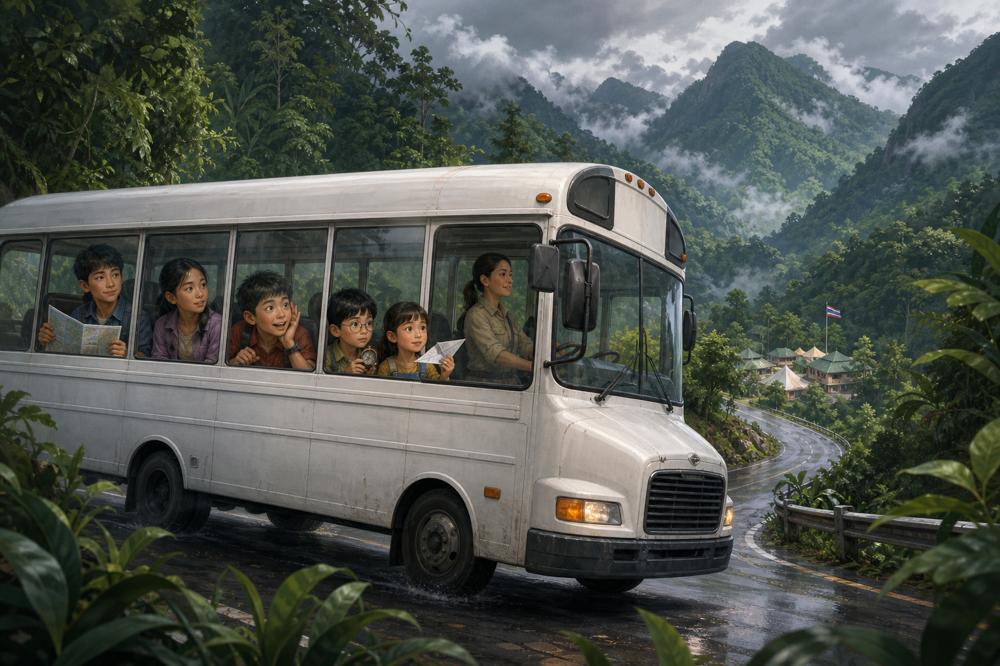
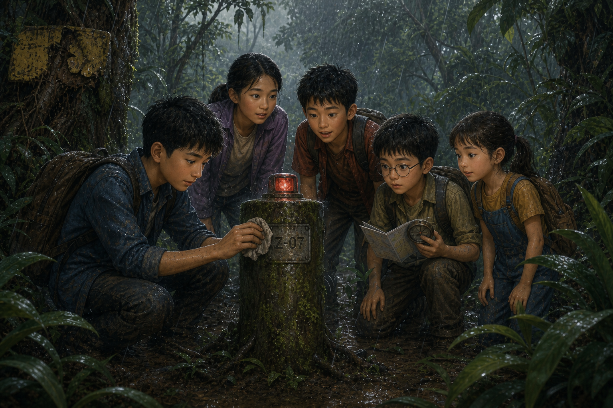

วันที่ป่าหายไปจากแผนที่
เวลาอ่านประมาณ 12 นาที · Survival / Science / Mystery

การเดินทางสู่ค่ายวิทยาศาสตร์เขาพระเมฆ
รถบัสสีขาวคันใหญ่ค่อย ๆ เลี้ยวออกจากถนนใหญ่ เข้าสู่ถนนเล็กที่คดเคี้ยวไปตามไหล่เขา
“อีกสิบห้านาทีถึงค่ายแล้วนะเด็ก ๆ!”
เสียงครูอ้อมดังมาจากหน้ารถ เด็กเกือบสามสิบคนส่งเสียงเฮลั่น บางคนรีบเก็บขนมยัดกระเป๋า บางคนยื่นหน้าไปติดกระจกจนเป็นรอยฝ้า
ข้างนอกมีแต่สีเขียว ภูเขาลูกแล้วลูกเล่าเรียงต่อกันจนมองไม่เห็นปลายทาง เมฆสีเทาก้อนใหญ่ลอยต่ำเสียจนเหมือนยอดเขากำลังแทงทะลุเข้าไปข้างใน
ต้นกล้ากดหน้าผากติดกระจก
“ถ้ามีไดโนเสาร์เดินออกมาตอนนี้ เราจะทำยังไงดี”
เด็กผู้หญิงที่นั่งอีกฝั่งของทางเดินหันมามอง
“ถ่ายรูปก่อน”
“แล้วค่อยวิ่ง?”
“ไม่” มีนาตอบหน้าตาย “ส่งให้ครูก่อน จะได้มีหลักฐานว่าเราโดนไดโนเสาร์กินจริง ๆ”
ต้นกล้าหัวเราะเสียงดังจนคนทั้งคันหันมามอง
เด็กผู้ชายตัวเล็กที่นั่งเบาะหน้าเหลียวกลับมา
“ไดโนเสาร์สูญพันธุ์ไปนานแล้วนะ”
“ปั้น…” ต้นกล้าทำหน้าเหนื่อยใจ “นายต้องจริงจังกับทุกเรื่องเลยเหรอ”
ปั้นดันแว่นขึ้นเล็กน้อย
“ก็นายถาม เราก็ตอบ”
1
แถวหน้าสุด นนท์ก้มดูแผนที่กระดาษที่ครูแจกก่อนขึ้นรถ เส้นสีเขียวคือแนวป่า เส้นสีน้ำเงินคือลำธาร สามเหลี่ยมเล็ก ๆ คือภูเขา และตรงกลางแผนที่มีวงกลมสีแดงวงหนึ่ง
ค่ายวิทยาศาสตร์เขาพระเมฆ
ข้าง ๆ นนท์ เด็กหญิงตัวเล็กที่สุดในกลุ่มกำลังพับกระดาษแผ่นหนึ่งอย่างตั้งอกตั้งใจ
“ฟ้า”
“คะ”
“นั่นใบกิจกรรมนะ”
ฟ้าหยุดมือ มองกระดาษ แล้วมองนนท์
“ยังพับไม่เสร็จเลยนี่คะ”
นนท์มองปีกเครื่องบินที่พับไปแล้วครึ่งหนึ่ง
“อ๋อ…”
ฟ้าค่อย ๆ คลี่กระดาษกลับให้เรียบ ราวกับไม่มีอะไรเกิดขึ้น
วันนี้เป็นวันแรกของ ค่ายนักสำรวจวิทยาศาสตร์รุ่นเยาว์ ครูแบ่งเด็กจากหลายโรงเรียนออกเป็นกลุ่ม กลุ่มละห้าคน กลุ่มของนนท์จึงเต็มไปด้วยคนที่เพิ่งรู้จักกันเมื่อเช้านี้เอง
นนท์ อายุสิบสองปี
มีนา อายุสิบเอ็ดปี
ต้นกล้า อายุสิบปี
ปั้น อายุเก้าปี
และฟ้า อายุแปดปี
ภารกิจแรกฟังดูไม่ยากเลย เดินตามเส้นทางศึกษาธรรมชาติประมาณสามกิโลเมตร วัดอุณหภูมิ ดูความใสของน้ำ สังเกตต้นไม้ แล้วฝึกใช้แผนที่กับเข็มทิศ
ครูอ้อมบอกว่า
“วันนี้เราไม่ได้แข่งกันว่าใครเดินเร็วที่สุดนะคะ แต่แข่งกันว่าใคร สังเกตสิ่งรอบตัวได้ดีที่สุด”
ต้นกล้าจำประโยคนี้ได้ขึ้นใจ เพราะพอครูพูดจบ เขาก็ยกมือถามทันที
“ถ้าผมเห็นร้านไอศกรีมก่อนเพื่อน นับไหมครับ”
ครูอ้อมตอบโดยไม่ต้องคิด
“ไม่นับค่ะ”
2
ประมาณเก้าโมงครึ่ง รถบัสก็จอดถึงค่าย
พอก้าวลงจากรถ อากาศเย็นกว่ากรุงเทพฯ จนฟ้าขนลุกทั้งแขน ลมพัดกลิ่นดินชื้นกับกลิ่นใบไม้เข้ามาเต็มจมูก
“กลิ่นเหมือนหลังบ้านยายเลยค่ะ”
มีนาหัวเราะ
“นี่แหละกลิ่นดินหลังฝนตก”
“มันมีชื่อด้วยเหรอคะ”
“มีสิ แต่เดี๋ยวค่อยเล่า”
ต้นกล้าหันขวับ
“อย่าบอกนะว่ากลิ่นดินก็มีชื่อ”
มีนายิ้ม
“ทุกอย่างมีเรื่องของมันทั้งนั้นแหละ”
นั่นเป็นครั้งแรกที่ต้นกล้าเงียบไปได้เกือบห้าวินาที
หลังเก็บกระเป๋าเข้าที่พัก ครูพาทุกคนมารวมกันหน้าอาคารไม้ แล้วแจกกระเป๋าอุปกรณ์ให้กลุ่มละหนึ่งใบ ข้างในมีของครบชุดสำหรับออกภาคสนามหนึ่งวัน
เข็มทิศ
เครื่องวัดอุณหภูมิ
แว่นขยาย
ขวดเก็บตัวอย่างน้ำ กับขวดพลาสติกเปล่าสำรองอีกสามใบ
หม้ออะลูมิเนียมใบเล็กกับไม้ขีดหนึ่งซอง
ผ้าสะอาดสองผืน
เชือก
นกหวีด
ชุดปฐมพยาบาลภาคสนาม กับมีดพับเล็กหนึ่งเล่ม
และแผนที่กันน้ำอีกหนึ่งแผ่น
“มีดพับให้หัวหน้ากลุ่มเก็บไว้นะคะ” ครูอ้อมย้ำ “ใช้ตอนมีครูอยู่ด้วยเท่านั้น”
กลุ่มของนนท์แบ่งหน้าที่กันเร็วมาก นนท์ถือแผนที่ ปั้นถือเข็มทิศ ต้นกล้าสะพายกระเป๋าอุปกรณ์ ส่วนฟ้าได้นกหวีด
สมุดบันทึกมีสองเล่ม มีนาจดสิ่งที่สังเกตเห็น ส่วนปั้นจดตัวเลขกับเวลา
ฟ้ามองนกหวีดในมือจนตาเป็นประกาย
“เป่าได้ไหมคะ”
อีกสี่คนตอบพร้อมกัน
“ยัง!”
3
หลังกินข้าวเที่ยงที่โรงอาหารของค่าย ทุกกลุ่มก็ออกเดินตามเส้นทางศึกษาธรรมชาติ
เส้นทางช่วงแรกสบายกว่าที่คิด ทางเดินกว้างจนเดินคู่กันได้ บางช่วงมีป้ายชื่อต้นไม้ บางช่วงมีสะพานไม้ข้ามลำธารใส
ทีมของนนท์หยุดวัดอุณหภูมิที่จุดแรก
“ยี่สิบหกองศา” มีนาจดลงสมุด
ต้นกล้าเอานิ้วแตะปลายเครื่องวัด
“ถ้าเราจับมันไว้ อุณหภูมิจะขึ้นไหม”
“น่าจะขึ้นนิดหน่อย” นนท์ตอบ “เพราะมือเราอุ่นกว่าอากาศ”
ต้นกล้ายิ้มกว้าง
“งั้นเราก็คือเครื่องทำความร้อนน่ะสิ”
“เครื่องทำความร้อนที่กินขนมตลอดเวลา” มีนาเสริม
ทั้งกลุ่มหัวเราะ
ระหว่างเดิน ปั้นชอบหยุดดูแผนที่แล้วเทียบกับทางจริงเป็นระยะ
“ตอนนี้เรากำลังไปทางตะวันตกเฉียงเหนือ”
“รู้ได้ยังไงว่าทางไหนเหนือคะ” ฟ้าถาม
ปั้นยกเข็มทิศขึ้นให้ดู
“เข็มสีแดงจะชี้ทิศเหนือเสมอ”
“ถ้าเราหมุนตัวล่ะคะ”
“เข็มก็ยังชี้เหนือเหมือนเดิม”
ฟ้าหมุนตัวหนึ่งรอบ แล้วอีกหนึ่งรอบ ก่อนจะหยุดเซนิดหน่อย
“โลกหมุนหรือหนูหมุนเนี่ย”
“หนูหมุน” นนท์ตอบ
“แน่ใจนะคะ”
“ค่อนข้างแน่ใจ”
ทุกอย่างดูเหมือนจะเป็นวันที่สนุกที่สุดวันหนึ่ง จนกระทั่งเกือบบ่ายสองโมง
มีนาเป็นคนแรกที่เงยหน้ามองท้องฟ้า
“เมฆดำขึ้นเยอะเลย”
ลมที่เคยเย็นสบายเริ่มแรงขึ้นทีละน้อย ใบไม้บนยอดสูงพลิกให้เห็นด้านสีอ่อนพร้อมกันทั้งแถบ เสียงฟ้าร้องครางต่ำ ๆ ดังมาจากหลังภูเขา
ครูอ้อมเป่านกหวีดเรียกทุกคน
“ทุกกลุ่มฟังนะคะ! เราจะตัดทางกลับ ฝนน่าจะมาเร็วกว่าที่พยากรณ์ไว้”
เด็กทั้งหมดเริ่มเดินกลับตามทางลัด ตอนแรกมีเพียงหยดน้ำใหญ่ ๆ ตกลงบนใบไม้
แปะ… แปะ… แปะ…
ไม่ถึงห้านาที ฝนก็เทลงมาราวกับใครยกถังน้ำคว่ำลงจากฟ้า
“โห!”
ต้นกล้าตะโกนอย่างตื่นเต้น
ครูรีบให้ทุกคนใส่เสื้อกันฝน ทางดินเริ่มกลายเป็นโคลนลื่น เสียงฝนดังจนแทบไม่ได้ยินเสียงคนที่เดินอยู่ข้าง ๆ ทีมของนนท์เดินอยู่ท้ายแถว โดยมีครูอ้อมอยู่ข้างหน้าไม่ไกลนัก
แล้วทันใดนั้น—
ครืนนนน!
เสียงดังสนั่นมาจากทางขวา พื้นสั่นเบา ๆ ใต้ฝ่าเท้า เด็กหลายคนร้องตกใจ
“อย่าหยุดเดิน! ไปต่อ!” ครูอีกคนตะโกน
ต้นกล้าหันไปมองทางภูเขา น้ำสีน้ำตาลข้นกำลังไหลทะลักลงมาตามร่องเขา
“น้ำป่าหรือเปล่า”
สีหน้าของนนท์เปลี่ยนไปทันที
ข้างหน้า ครูอ้อมกำลังพาเด็กกลุ่มแรกข้ามสะพานไม้เล็ก ๆ พอถึงคิวที่ทีมของนนท์จะตามไป—
กร๊อบ!
เสียงไม้หักดังลั่น ลำธารที่เมื่อเช้ากว้างไม่ถึงสองเมตร ตอนนี้กลายเป็นสายน้ำเชี่ยวสีน้ำตาล กิ่งไม้ทั้งกิ่งหมุนคว้างมากับน้ำ สะพานไม้สั่นอย่างแรง
“หยุด!”
ครูตะโกน
เด็กทั้งห้าหยุดกึกพร้อมกัน
ครูอ้อมยืนอยู่อีกฝั่ง
“อย่าข้ามนะ! อยู่ตรงนั้นก่อน!”
มีนาหน้าซีด มือที่กำสมุดบันทึกไว้เย็นเฉียบ
“แล้วเราจะไปทางไหนกัน”
นนท์เปิดแผนที่ใต้เสื้อกันฝน น้ำฝนไหลเป็นทางอยู่บนแผ่นพลาสติกใสที่หุ้มมันไว้
ปั้นชี้
“มีทางอีกเส้นอ้อมกลับค่ายได้”
“ตามป้ายสีเหลืองไปนะ! ครูจะไปรอที่จุดรวมพล!” เสียงครูอ้อมตะโกนข้ามสายน้ำมา
นนท์กวาดตามองจนเห็นป้ายลูกศรสีเหลืองตอกอยู่บนต้นไม้ เด็กทั้งห้าจึงหันเข้าสู่ทางเดินเล็ก ๆ ด้านซ้าย
พวกเขายังไม่รู้เลยว่า—
อีกไม่ถึงครึ่งชั่วโมง
ทางเส้นนี้จะพาพวกเขาไปยังสถานที่ที่ไม่มีอยู่ในแผนที่ฉบับไหนเลย
4
ฝนยังไม่มีทีท่าจะหยุด ทางเดินแคบลงเรื่อย ๆ จนต้นกล้าต้องใช้แขนปัดกิ่งไม้ที่โน้มลงมาขวางหน้า
“ป้ายเหลืองอีกอัน!” มีนาชี้
ทุกคนเดินตาม แล้วก็เจออีกป้าย และอีกป้าย
แต่พอเดินไปได้ราวสิบห้านาที ปั้นก็หยุดกึก
“เดี๋ยวนะ”
“อะไรเหรอ” นนท์ถาม
ปั้นหยิบเข็มทิศขึ้นมา เขามองมัน มองแผนที่ แล้วมองเข็มทิศอีกครั้ง
“เราเดินผิดทาง”
ต้นกล้าหันกลับไปดูทางที่ผ่านมา
“แต่เราตามป้ายมาตลอดเลยนะ”
“ใช่”
“งั้นจะผิดได้ยังไง”
ปั้นชี้ลงบนแผนที่
“ทางอ้อมต้องพาเราไปทางตะวันออกเฉียงใต้”
แล้วเขาก็ยกเข็มทิศขึ้น
“แต่สิบกว่านาทีที่ผ่านมา เรากำลังเดินขึ้นเหนือ”
ไม่มีใครพูดอะไรอยู่พักหนึ่ง
มีเพียงเสียงฝนกระทบใบไม้
“ป้ายหันผิดทางหรือเปล่าคะ” ฟ้าถามเบา ๆ
ต้นกล้ามองย้อนกลับไป ลูกศรสีเหลืองอันล่าสุดยังชี้ลึกเข้าไปในป่า
นนท์เดินเข้าไปใกล้แล้วเช็ดโคลนออกจากป้าย
“ป้ายเก่ามากเลย”
สีเหลืองซีดจนเกือบขาว ตะปูขึ้นสนิมจนเป็นคราบแดง
มีนาเอามือแตะลำต้น
“มันติดอยู่ตรงนี้มานานแล้วด้วย”
“รู้ได้ยังไง”
“ดูสิ ต้นไม้โตหุ้มขอบป้ายไปแล้ว”
ปั้นก้มดูแผนที่อีกครั้ง
“ในแผนที่ไม่มีเส้นทางขึ้นเหนือจากตรงนี้เลย”
“แผนที่อาจจะเก่าก็ได้” ต้นกล้ายื่นหน้าเข้ามา
นนท์พลิกมุมแผนที่ วันที่พิมพ์อยู่ด้านล่าง
ปรับปรุงข้อมูล: พฤษภาคม 2569
“ใหม่มาก” นนท์พูดเสียงเบาลง
ทุกคนเงียบอีกครั้ง
ฟ้ามองไปรอบตัว
“แล้วตอนนี้เราอยู่ตรงไหนกันคะ”
คำถามง่าย ๆ ของเด็กที่ตัวเล็กที่สุด กลับไม่มีใครตอบได้สักคน
🧠 หยุดคิดสักครู่
นนท์มี แผนที่ ปั้นมี เข็มทิศ
แต่เส้นทางที่พวกเขายืนอยู่ตอนนี้ กลับไม่มีอยู่ในแผนที่
ถ้าเป็นเรา จะทำยังไงต่อ?
A. เดินตามป้ายสีเหลืองต่อไป เผื่อจะถึงค่ายเร็วขึ้น
B. เดินย้อนกลับทางเดิมทันที
C. หยุดก่อน หาให้ได้ว่าตอนนี้เราอยู่ตรงไหน แล้วค่อยตัดสินใจ
เลือกไว้ในใจก่อน แล้วค่อยอ่านต่อนะ
5
นนท์สูดหายใจเข้าลึก ๆ
“เราหยุดก่อน”
“แต่—” ต้นกล้าทำท่าจะค้าน
“ถ้าเรายังไม่รู้ว่าเราอยู่ไหน เดินต่อไปอาจหลงหนักกว่าเดิม”
ปั้นพยักหน้า
“เราเลือก C”
ฟ้ายกมือ
“หนูก็ C ค่ะ”
ต้นกล้ามองหน้าทุกคนแล้วยักไหล่
“โอเค C ก็ C”
เด็กทั้งห้าหาที่หลบฝนใต้ชะง่อนหินเตี้ย ๆ ริมทาง ไม่ใช่ใต้ต้นไม้สูง เพราะครูเคยสอนไว้ว่าเวลาฟ้าร้อง ต้นไม้สูงคือที่ที่อันตรายที่สุด
นนท์กางแผนที่ออก
“เรารู้อะไรบ้าง”
มีนาชี้ไปข้างหลัง
“เราข้ามลำธารไม่ได้”
ปั้นพูดต่อ
“จากลำธาร เราเดินขึ้นเหนือมาประมาณสิบห้านาที”
“เดินเร็วแค่ไหน”
“ฝนตก ทางลื่น เดินช้า น่าจะสักสองถึงสามกิโลเมตรต่อชั่วโมง”
นนท์คิดอยู่ครู่หนึ่ง
“งั้นเราน่าจะห่างจากลำธารไม่ถึงหนึ่งกิโลเมตร”
ต้นกล้ามองแผนที่
“แล้วในระยะหนึ่งกิโลเมตรทางเหนือ มีอะไรบ้าง”
ปั้นลากนิ้วไปบนแผนที่ช้า ๆ แล้วนิ้วก็หยุดลง
“ไม่มี”
ฟ้าชะโงกดู
“ไม่มีอะไรเลยเหรอคะ”
“ตรงนี้เป็นพื้นที่ป่าล้วน ๆ ไม่มีทางเดิน ไม่มีอาคาร ไม่มีแม้แต่ลำธาร”
เสียงฟ้าร้องดังขึ้นอีกครั้ง
แล้วมีนาก็เงยหน้าขึ้น
“เงียบก่อน”
ทุกคนหยุดพูดทันที
“ได้ยินอะไรไหม”
ต้นกล้าตั้งใจฟัง
เสียงฝน
เสียงลม
เสียงน้ำหยดจากใบไม้
แล้วก็…
ติ๊ด
เบามาก
ผ่านไปสองวินาที
ติ๊ด
ปั้นหันขวับไปทางซ้าย
ติ๊ด
เหมือนเสียงอุปกรณ์อิเล็กทรอนิกส์บางอย่าง ดังมาจากกลางป่า
“มีบ้านคนหรือเปล่าคะ” ฟ้าถาม
นนท์มองแผนที่อีกครั้ง
“ไม่มี”
ต้นกล้ายิ้มขึ้นมาทันที
“งั้นเราไปดูกันไหม”
มีนาส่ายหน้า
“นี่ไม่ใช่หนังนะ”
ติ๊ด
เสียงนั้นดังขึ้นอีก คราวนี้ทุกคนได้ยินชัดเจน
ปั้นชี้ไปทางพุ่มไม้
“มาจากตรงนั้น”
เด็กทั้งห้าค่อย ๆ เดินเข้าไป เพียงไม่กี่ก้าวก็พบเสาเหล็กเตี้ย ๆ ต้นหนึ่งโผล่พ้นพื้นดิน
มันเก่ามาก เต็มไปด้วยตะไคร่เขียวคล้ำ แต่ตรงส่วนบนกลับมีไฟสีเขียวดวงเล็ก ๆ กะพริบอยู่
ติ๊ด
ฟ้าเอียงคอ
“ของเก่าขนาดนี้ ทำไมยังมีไฟติดอยู่ล่ะคะ”
ไม่มีใครตอบได้
นนท์ใช้มือเช็ดคราบดินบนแผ่นโลหะ ใต้คราบนั้นมีตัวอักษรจาง ๆ อยู่สามตัว
Z · 0 · 7

สิ่งที่ไม่ควรอยู่ในพื้นที่ว่างเปล่าบนแผนที่
ต้นกล้ากำลังจะพูดอะไรบางอย่าง
ทันใดนั้นไฟสีเขียวก็ดับลง แล้วไฟสีแดงก็ติดขึ้นแทน
ปี๊บ!
จากที่ไหนสักแห่งลึกเข้าไปในป่า มีเสียงเครื่องจักรขนาดใหญ่เริ่มทำงาน
ครืนนนนนน…
เด็กทั้งห้าหันมองหน้ากัน
ปั้นก้มดูแผนที่ในมืออีกครั้ง บริเวณตรงหน้าของพวกเขาเป็นเพียงพื้นที่สีเขียวว่างเปล่า
ไม่มีถนน
ไม่มีอาคาร
ไม่มีสัญลักษณ์ใด ๆ
แต่เสียงเครื่องจักรยังคงดังขึ้นมาจากใต้พื้นดิน
และนั่นเป็นครั้งแรกที่เด็กทั้งห้าเริ่มสงสัยว่า
บางที…
สิ่งที่ผิดอาจไม่ใช่พวกเขา
แต่อาจเป็นแผนที่ต่างหาก
🔬 วิทยาศาสตร์ในตอนนี้
ป้ายบอกทางเป็นของที่คนติดไว้ แต่เข็มทิศชี้เหนือตามสนามแม่เหล็กโลกเสมอ เวลาข้อมูลสองอย่างขัดกัน ให้หยุดก่อน แล้วดูว่าอันไหนเชื่อถือได้มากกว่า ป้ายอาจเก่า อาจหลุด หรืออาจถูกหันผิดทางได้
เวลาหลงทาง การเดินต่อมักทำให้แย่ลง ถ้ารู้ว่าเดินมานานเท่าไรและเร็วประมาณไหน เราจะประมาณระยะทางคร่าว ๆ ได้ คนเดินบนทางลื่นกลางฝนได้ราวสองถึงสามกิโลเมตรต่อชั่วโมง
เวลามีฟ้าร้อง อย่าหลบฝนใต้ต้นไม้สูงที่ตั้งโดดอยู่ต้นเดียว เพราะมันคือจุดที่ฟ้าผ่าลงง่ายที่สุดจุดหนึ่ง
จบตอนที่ 1
ช่วยให้ทีม ZERO เดินทางต่อ ☕
ถ้าตอนนี้ทำให้คุณสนุก สนับสนุนค่าเวลาเขียนและภาพประกอบได้ตามสะดวกครับ
สนับสนุนทีม ZERO